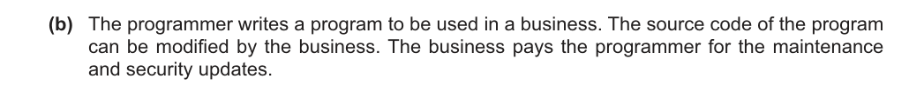
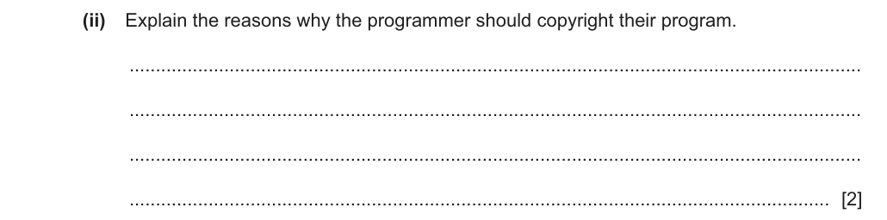
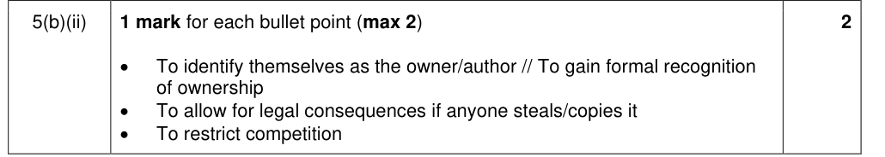

7.1.3
Copyright legislation
Why does software need copyright legislation?
- CreateA programmer spends time developing an original program.
- CopySomeone can reproduce and distribute its code at very low cost.
- Protect rightsCopyright gives the rights holder a legal basis for controlling copying and distribution.
- EnforceUnauthorised copying can lead to legal action under the applicable law.
Copyright protects original expression, including program code. It helps establish rights in the work and provides a legal basis for challenging copying or distribution that infringes those rights. It does not give the programmer ownership of every idea or method used in the program.
Copyright ownership and permission are different
| Concept | Question | Example |
|---|---|---|
| Copyright | Who holds the rights in the work? | The rights holder can decide how copies are licensed. |
| A licence | What acts does the rights holder permit? | A licence may permit use, modification or redistribution under stated conditions. |
| A copy | What has this user obtained? | Buying or downloading a copy does not automatically transfer copyright. |
Teacher-written check
A company buys one copy of a program and gives copies to every customer. Why is payment alone insufficient?
Check your reasoning
Payment for a copy does not establish permission to distribute customer copies. The company must check the licence and obtain the necessary rights; otherwise its distribution may infringe copyright.
Past paper · why copyright the program?
Original question · Cambridge 9618/12
1. Explain why copyright protection is needed
Cambridge 9618/12 · October/November 2024 · 5(b)(ii) · 2 marks
Selected parts: 5(b)(ii) [2].
Original question


Reading the question — teacher guidance
Answer part 5(b)(ii). Explain why the programmer needs copyright protection. The shared business context is retained; the licensing part is taught separately in 7.1.4.
Solution / model answer — teacher-written
Copyright recognises the programmer as the author or owner of the protected work. It provides a legal basis for challenging copying that infringes the rights or permitted terms.
Official mark scheme

Why this earns marks — teacher explanation
The official scheme accepts ownership or authorship recognition and legal consequences for copying, with one mark per accepted point and a maximum of two. It also lists restricting competition. This does not mean that copyright monopolises every idea or prevents independently written competing programs.
Common mistakes — teacher analysis
The question wording does not establish that registration is universally required. Permission to run or modify a program does not by itself transfer copyright.
Cambridge past-paper access page ↗ · Source references and page numbers are shown with each extract. © Cambridge University Press & Assessment / UCLES.